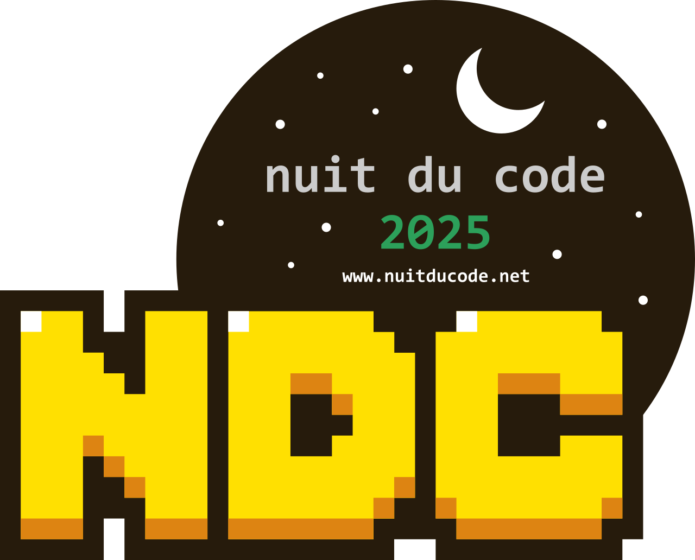
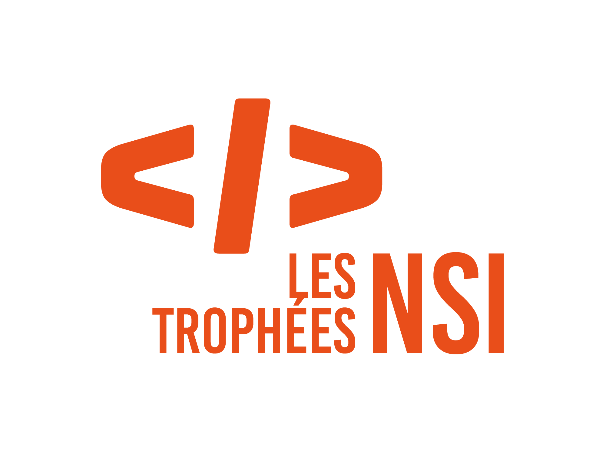
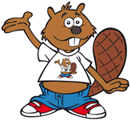
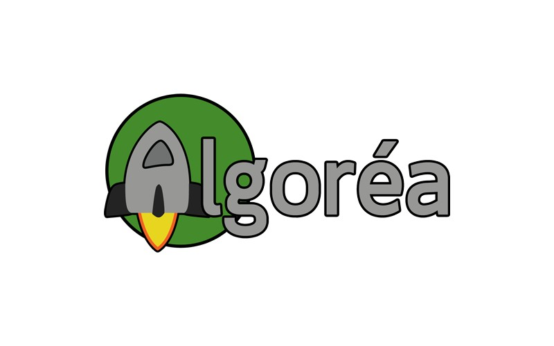

Les bases de l’informatique
Programmation, données, web et architecture des ordinateurs : retrouve les cours et les TP de Première.
Accéder à la PremièreSaint-Laurent · Numérique et sciences informatiques
Bienvenue dans l’espace NSI de Saint-Laurent. Retrouve tes cours, développe tes projets et découvre les réalisations des élèves.
Choisir mon niveauCours · Travaux pratiques · Révisions
Programmation, données, web et architecture des ordinateurs : retrouve les cours et les TP de Première.
Accéder à la PremièreExplore les chapitres, entraîne-toi avec les exercices et retrouve les ressources pour tes révisions.
Accéder à la TerminaleDe l’idée au programme
Écrire des programmes en Python, comprendre les algorithmes et apprendre à résoudre des problèmes.
Explorer HTML, CSS et JavaScript pour donner forme à ses idées et construire des projets.
Développer son autonomie, coopérer et apprendre de ses erreurs tout au long de l’année.
Présentations & témoignages
Découvre la présentation interactive de la spécialité.
Ouvrir la présentation ↗Portfolios & créations
La NSI au-delà des cours

Un marathon de programmation pour imaginer et réaliser un jeu vidéo en équipe.

Lauréat territorial en 2024 : une belle reconnaissance du travail d’une équipe de Terminale.

Des défis pour découvrir la logique, les algorithmes et les concepts de l’informatique.

Aller plus loin en programmation et mettre son raisonnement à l’épreuve.
Autonomie, initiative, créativité, coopération, programmation et raisonnement : des compétences qui se construisent avec chaque projet.
Lycée Saint-Laurent · 43 rue Alfred Brébion, Lagny-sur-Marne